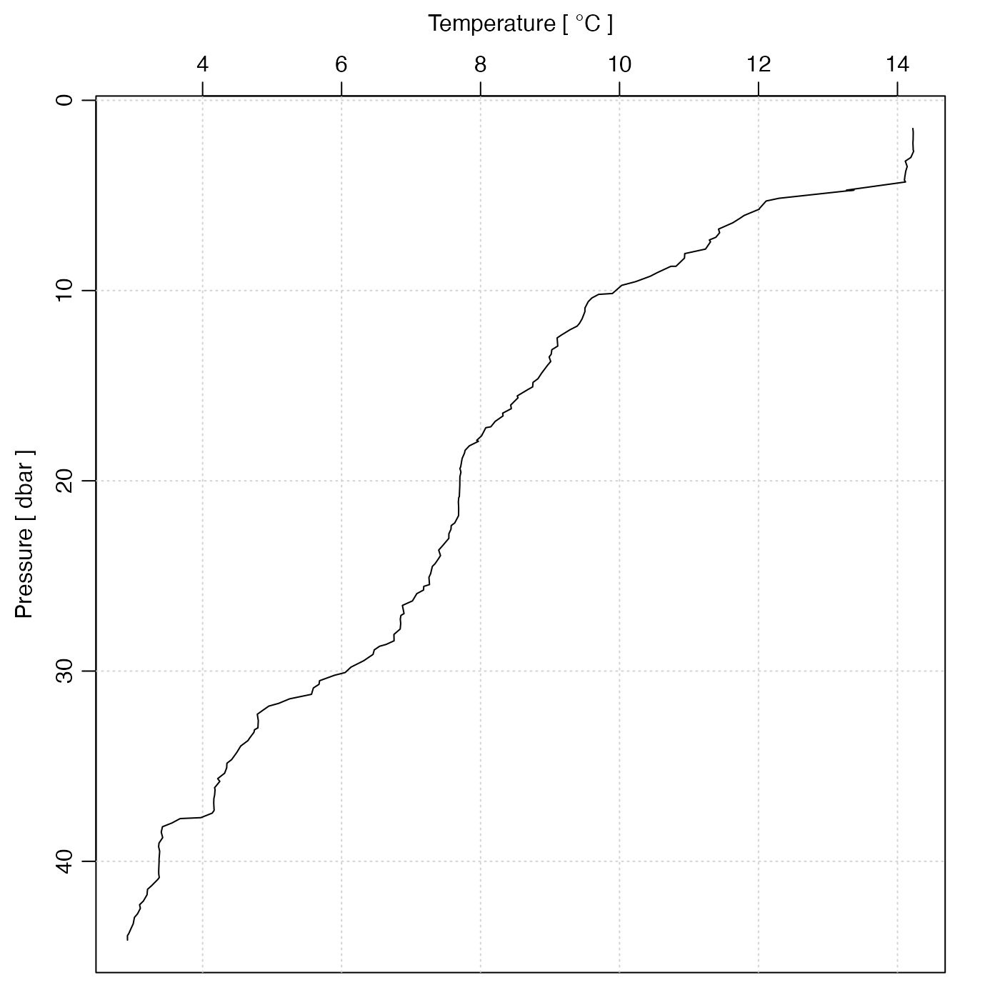

Plot a profile, showing variation of some quantity (or quantities) with
pressure, using the oceanographic convention of putting lower pressures
nearer the top of the plot. This works for any oce object that has a
pressure column in its data slot.
The colors (col.salinity, etc.) are only used if two profiles appear
on a plot.
plotProfile( x, xtype = "salinity+temperature", ytype = "pressure", eos = getOption("oceEOS", default = "gsw"), lty = 1, xlab = NULL, ylab = NULL, col = "black", col.salinity = "darkgreen", col.temperature = "red", col.rho = "blue", col.N2 = "brown", col.dpdt = "darkgreen", col.time = "darkgreen", pt.bg = "transparent", grid = TRUE, col.grid = "lightgray", lty.grid = "dotted", Slim, Clim, Tlim, densitylim, N2lim, Rrholim, dpdtlim, timelim, plim, xlim, ylim, lwd = par("lwd"), xaxs = "r", yaxs = "r", cex = 1, pch = 1, useSmoothScatter = FALSE, df, keepNA = FALSE, type = "l", mgp = getOption("oceMgp"), mar, add = FALSE, inset = FALSE, debug = getOption("oceDebug", 0), ... )
| x | a ctd object. |
|---|---|
| xtype | Item(s) plotted on the x axis, either a vector of length equal
to that of
|
| ytype | variable to use on y axis. The valid choices are:
|
| eos | equation of state to be used, either |
| lty | line type for the profile. |
| xlab | optional label for x axis (at top of plot). If not
provided, the value of |
| ylab | optional label for y axis. Set to |
| col | color for a general profile. |
| col.salinity | color for salinity profile (see “Details”). |
| col.temperature | color for temperature (see “Details”). |
| col.rho | color for density (see “Details”). |
| col.N2 | color for square of buoyancy frequency (see “Details”). |
| col.dpdt | color for dP/dt. |
| col.time | color for delta-time. |
| pt.bg | inside color for symbols with |
| grid | logical, set to |
| col.grid | color for grid. |
| lty.grid | line type for grid. |
| Slim | Optional limit for S axis |
| Clim | Optional limit for conductivity axis |
| Tlim | Optional limit for T axis |
| densitylim | Optional limit for density axis |
| N2lim | Optional limit for N2 axis |
| Rrholim | Optional limit for Rrho axis |
| dpdtlim | Optional limit for dp/dt axis |
| timelim | Optional limit for delta-time axis |
| plim | Optional limit for pressure axis, ignored unless
|
| xlim | Optional limit for x axis, which can apply to any plot type.
This is ignored if the plotted x variable is something for which a limit
may be specified with an argument, e.g. |
| ylim | Optional limit for y axis, which can apply to any plot type,
although is overridden by |
| lwd | lwd value for data line |
| xaxs | value of |
| yaxs | value of |
| cex | size to be used for plot symbols (see |
| pch | code for plotting symbol (see |
| useSmoothScatter | boolean, set to |
| df | optional argument, passed to |
| keepNA | FALSE |
| type | type of plot to draw, using the same scheme as
|
| mgp | 3-element numerical vector to use for par |
| mar | Four-element numerical value to be used to set the plot
margins, with a call to par |
| add | A logical value that controls whether to add to an existing plot. (It
makes sense to use |
| inset | A logical value indicating whether to draw an inset plot.
Setting this to |
| debug | a flag that turns on debugging. Set to 1 to get a moderate amount of debugging information, or to 2 to get more. |
| ... | optional arguments passed to other functions. A common example
is to set |
None.
read.ctd() scans ctd information from a file,
plot,ctd-method() is a general plotting function for ctd
objects, and plotTS() plots a temperature-salinity diagrams.
Other functions that plot oce data:
plot,adp-method,
plot,adv-method,
plot,amsr-method,
plot,argo-method,
plot,bremen-method,
plot,cm-method,
plot,coastline-method,
plot,ctd-method,
plot,gps-method,
plot,ladp-method,
plot,landsat-method,
plot,lisst-method,
plot,lobo-method,
plot,met-method,
plot,odf-method,
plot,rsk-method,
plot,satellite-method,
plot,sealevel-method,
plot,section-method,
plot,tidem-method,
plot,topo-method,
plot,windrose-method,
plot,xbt-method,
plotScan(),
plotTS(),
tidem-class
Other things related to ctd data:
CTD_BCD2014666_008_1_DN.ODF.gz,
[[,ctd-method,
[[<-,ctd-method,
as.ctd(),
cnvName2oceName(),
ctd-class,
ctd.cnv,
ctdDecimate(),
ctdFindProfiles(),
ctdRaw,
ctdTrim(),
ctd,
d200321-001.ctd,
d201211_0011.cnv,
handleFlags,ctd-method,
initialize,ctd-method,
initializeFlagScheme,ctd-method,
oceNames2whpNames(),
oceUnits2whpUnits(),
plot,ctd-method,
plotScan(),
plotTS(),
read.ctd.itp(),
read.ctd.odf(),
read.ctd.sbe(),
read.ctd.woce.other(),
read.ctd.woce(),
read.ctd(),
setFlags,ctd-method,
subset,ctd-method,
summary,ctd-method,
woceNames2oceNames(),
woceUnit2oceUnit(),
write.ctd()
